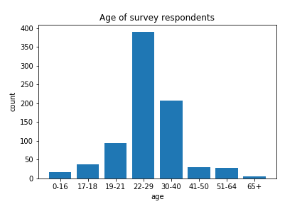
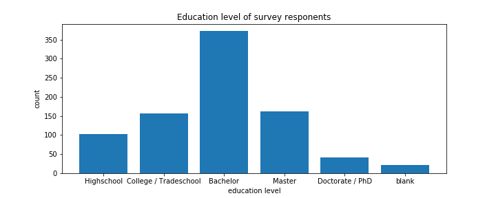
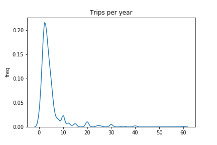
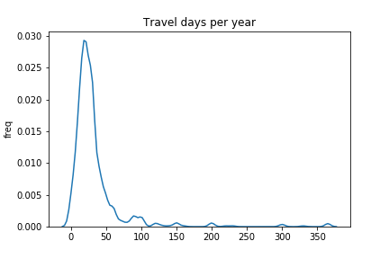

Natural Language Processing on the results of the r/travel subscriber survey
The subreddit r/travel's commemorative 1,000,000th subscriber survey had "only" 858 responses but with 100 features it made for some interesting exploratory data analysis.
Unsurprisingly, for an internet forum, the most populous age category was 22-29 year olds (note the age categories were not of equal range!). The approximate average age of respondents was 29 years old. We don't just have data from kids here, although there are a fair few teens in the data.
This is a well-educated bunch of travellers. The difference between "College" and "Bachelor" is not clear to me, but with the inclusion of "Tradeschool" I suppose there is a distinction between the level of educational institution as well as between those who completed degrees and those who dropped out.
This is called a kernel density plot, you can think of it as a representation of the relative frequency of values. We can see that most respondents go for somewhere around three trips each year. There are a few people going for so many trips that they decided to just round to 30 or 40 rather than figure out the exact number. There is a similar phenomenon with the days spent travelling each year (see below)
Here are some quick stats for context:
Now we get to the fun open-ended questions with unstructured data. I chose three in particular for visualizations: "In 10 words or less, what is your best travel tip?", "What motivates you to travel?" and "What is the one thing you recommend people have to do/see before they die?"
For each question, I ran a sentiment analysis to calculate the polarity (defined as negative vs positive) and subjectivity (defined as objective vs subjective) of the responses. Sentiment is presented in a polar coordinate bar chart with subjectivity encoded by height and subjectivity double encoded by degree and color. Hovering over a bar reveals the sentiment scores and the original response.
The sentiment scores are fun if only for how easily we can follow the algorithm's logic from the results. For example, judged as least polarizing are "Don't take checked in luggage if possible" (check and possible), "Be curious" (curious), and "Expect the Unexpected" (expected and unepected) in which the words used by the analysis really jump out. My favorite artifact is the concentration of "Grand Canyon" responses at high subjectivity.
In addition to the sentiment, I ran an analysis called term frequency-inverse document frequency (TF-IDF). After removing stop words (words without semantic value such as "and", "so", "to"), we calculate the number of times each word appears in the data (term frequency). We than multiply by a measure of the meaningfulness of the word (inverse document frequency), which gives more weight to rare words. You can read more about TF-IDF here.
Here I have shown the twenty highest TF-IDF values for each question. Since TF-IDF is a relative measure the exact value is not as meaningful as the comparison between words, but you can look at the values by hovering over each bar. I think the most interesting feature is the prevalence of "culture" and "new" in responses for travel motivation and the lack of any dominant words in the responses for things to do before you die.